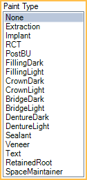

Procedure Code
Procedure code settings, behaviors, defaults, and more can be edited to meet the needs of the practice.
In Procedure Codes, double-click an existing code.

Procedure Code Settings

Time Pattern: Use the vertical slider on the left to set the procedure time allotment. By default, each square represents 10 minutes. To change the default, see Time Increments in Appointment View Setup. Slash (/) indicates assistant time, X indicates provider time. Click X or / to toggle to the other. Procedure time is used to determine default appointment length. See Time Bars for more details.
Proc Code: The code itself. It can be up to 15 digits long. All codes starting with D are shortened to 5 characters before being included on an insurance claim. For example, the office can have two different codes for nitrous, with the difference being a letter that is added to the end of a standard D code. When sent to insurance, only the standard 5 digit code is used.
Alt Code: Associate an alternate code. Useful for some Medicaid plans like Denti-Cal. See Medicaid or Flat Co-Pay Insurance Plan.
Medical Code: Associate a medical code. The medical code must already exist. See Cross Code. Cross coding only affects medical claims. It does not affect what shows on an EHR CCD (summary of care).
Ins. Subst Code: Associate an insurance substitution code and optionally set an Only if condition. The substitute code is used to calculate downgraded estimates for procedures (when insurance reduces the allowed amount of a procedure). See Estimate Downgrades.
- Posterior composites: Typically enter the amalgam code and set the condition to Molar.
- Porcelain crowns: Typically enter the FGC code and set the condition to SecondMolar. If the office charges the same for both types of crowns this setting is not as important.
Description: Only non-ADA code descriptions can be edited. Automatically update ADA code descriptions using Procedure Code Tools.
Abbreviation: Can be edited. This is what appears on an appointment in the Appointments Module when Procs or ProcsColored are added to an Appointment View. Limited to 50 characters
Layman's Term: Enter simpler language to describe the procedure. It shows as the procedure description in Treatment Plans, the Chart Module, the Account Module, and Statements.
Base Units: Typically for Medical Insurance claims. When calculating a procedure fee, the standard fee is increased based on the base unit, thereby increasing the billed fee. The base unit calculates the fee and time pattern using an additive process. Base Unit = 0 (standard fee) Base Unit = 1 (standard fee + standard fee) Base Unit = 2 (standard fee + standard fee + standard fee).
For example, the procedure code for Nitrous Oxide may have a time pattern of 15 minutes (base unit of 0) and a fee of $100. During the procedure, the office may typically use Nitrous Oxide for a longer period of time. Instead of adding the procedure to the chart multiple times, increase the base unit.
- By setting the Base Unit to 1, the Time Pattern = 30 minutes and the Procedure Fee = $200
- By setting the Base Unit to 2, the Time Pattern = 45 minutes and the Procedure Fee = $300
- By setting the Base Unit to 3, the Time Pattern = 60 minutes and the Procedure Fee = $400
There is a checkbox on the Insurance Plan for Claims show base units which shows the base unit on the medical claim form.
Drug NDC: National Drug Code number.
Default Revenue Code: A 3-digit code sometimes used for institutional claims. It tells insurance where the patient was when they received insurance or the type of item they received. It shows as the default Revenue Code on the Procedure - Medical Tab.
Color Override: Override the default color for this procedure on the Graphical Tooth Chart. Usually colors are based on procedure status, such as Treatment Planned or Completed, not on individual procedure code. However in rare situations the office may want a procedure code to always show in one color. For example, implants look better as always gray, instead of red, blue, or green. Click None to remove the override.
Procedure Code Settings (Continued)

Do not usually bill to Ins: Determines the default setting of the Do Not Bill to Ins checkbox on the Procedure - Financial Tab when charting a new procedure. Useful to identify procedures that are not usually sent to insurance (e.g., non-standard D codes, crown seats).
- Checked: Defaults the procedure to have the Do Not Bill to Ins box checked.
- Unchecked: Defaults the procedure to have the Do Not Bill to Ins box unchecked.
InsPlans Overrides: Override the default Do not usually bill to Ins setting for the procedure code on an insurance plan level. See Insurance Plans Overrides
Is Hygiene procedure: See Edit Appointment for an explanation of Hygiene provider.
- Checked: This procedure is automatically assigned to the hygiene provider when scheduling an appointment with two providers.
- Unchecked: This procedure is assigned normally.
Is Prosthesis: Determines whether or not additional Prosthesis Replacement fields show on the Procedure Info window.
- Checked: Prosthesis fields show. Users must complete this information before sending the insurance claim.
- Unchecked: Prosthesis fields do not show.
Is Radiology: Typically used for EHR to designate a procedure as an x-ray.
- Checked: This procedure is considered a radiology order for EHR purposes.
- Unchecked: This procedure is not considered radiology for EHR purposes.
Auto Tax: Determines whether or not Sales Tax is applied to this procedure.
- Checked: A sales tax adjustment is automatically added to this procedure when the procedure is set complete. Requires the Automate Sales Tax preference to be enabled.
- Unchecked: This procedure is not automatically taxed when it is set complete.
Assign to Prov: Assign a specific provider to this procedure. For example, create a procedure for selling mouthwash from the dental office, then assign the procedure to a dummy provider. This avoids inflated production numbers on real providers. The provider selected here is assigned to this procedure when it is created, attached to an appointment, or an attached appointment is set complete.
Bypass Global Lock Date: Determines whether or not this procedure is affected by the Global Lock Date (if turned on).
- Checked: If this procedure has a $0 fee, it is not limited by the global lock date, meaning it can be deleted or backdated. Users can also add a new procedure and backdate it prior to the lock date, or backdate an existing procedure's procedure date to before the lock date. This can be useful for providers who add non-clinical procedures as reminders then later remove them.
- Unchecked: Global lock dates apply to this procedure as normal.
ICD-10s (up to 4): Add up to four ICD-10 codes to automatically add to the Procedure - Medical Tab when charted.
Paint Types
Paint Type: Determines how the procedure is drawn on the Graphical Tooth Chart.
- Extraction: A large X when treatment-planned. Tooth is hidden once procedure is set complete.
- If switching an existing procedure to this Paint Type, procedures with a status of Completed, Existing-Current Prov, or Existing-Other Prov are not automatically marked missing. Users must double-click the existing procedure to refresh the graphic.
- If switching an existing procedure from this Paint Type to any other, teeth are not automatically marked as Not Missing. Users must mark teeth as Not Missing from the Missing/Primary Teeth tab in the Chart Module.
- Implant: Displays as implant screw only. To indicate a previously placed implant, assign this paint type to a surgical procedure with a status of EO. Before the implant graphic shows, the tooth must also be marked missing. Once an implant is showing, a crown can be entered. Crowns do not normally show on missing teeth, so entering an implant procedure first is necessary in this case.
- RCT: Root canal, not including pulp chamber.
- PostBU: Post or Buildup. Fills the pulp chamber. Also used for pulpotomies (vital pulp therapies) on primary teeth. If the office does many buildups that do not involve the pulp chamber, then remove this paint type from the procedure code and use no paint type at all. The graphics make more sense on the chart for this situation.
- FillingDark/Light: Dark and light color options.
- CrownDark/Light - Caps tooth. Tooth must be visible (or there needs to be an implant). Dark and light color options.
- BridgeDark/Light - Looks similar to a crown, but also shows on missing teeth. Dark and light color options.
- DentureDark/Light: Teeth should be marked missing first. Dark and light color options. Similar to crown graphic.
- Sealant: An S.
- Veneer: Covers front of anterior teeth or premolars. Veneer paint type is not typically used on molars. When it is, graphics only show on buccal (B) and class five (V) surfaces.
- Text: Additional box for Paint Text appears when selected. Allows user to designate text shown above or below the tooth (e.g., watch).
- If using OpenGL for Tooth Chart Graphics, only a capital W is allowed. If using DirectX 11, any text is allowed.
- Retained Root: Displays as root only. Displays only when using DirectX 11.
- SpaceMaintainer: Solid line between missing teeth. Displays only when using DirectX 11.
Treatment Area

Treatment Area: Determines the treatment area options available when charting the procedure (Procedure) and sending on claims.
- None: No treatment area. Procedures do not display on the Graphical Tooth Chart.
- Surf: Procedure requires a tooth number and surface.
- Procedures appear on the Graphical Tooth Chart when used with the FillingDark and FillingLight Paint Types.
- Procedures appear using the following Paint Types, but are not recommended with Surf treatment area: Extraction, PostBU, RCT, Retainted Root, Text, or Veneer
- Tooth: Procedure requires a tooth number only (e.g., 29).
- Procedures appear on the Graphical Tooth Chart when used with the following recommended Paint Types: Extraction, Implant, PostBU, RCT, Retainted Root, Text, Veneer, and Sealant.
- Mouth: The treatment area covers the whole mouth. No additional options display when charting. Sends 00 on claims. Procedures do not display on the Graphical Tooth Chart.
- Quad: Procedure requires a quadrant (e.g., UR).
- Procedures appear on the Graphical Tooth Chart when used with the SpaceMaintainer Paint Type for teeth #14-8, #9-13, #20-24, #25-29 only.
- Sextant: Procedure requires a sextant (e.g., 5). Procedures do not display on the Graphical Tooth Chart.
- Arch: Procedure requires an arch (e.g., L).
- Procedures appear on the Graphical Tooth Chart when used with the DentureDark or DentureLight Paint Types.
- Tooth Range: Procedure requires a tooth range (e.g., 12-14).
- Procedures appear on the Graphical Tooth Chart when used with the following recommended Paint Types: DentureDark, DentureLight, or SpaceMaintainer.
- & Tooth Range: Only available when Quad or Arch is selected. Useful for codes that have multiple treatment areas (e.g., space maintainers).
- When used with Quad, appears on the Graphical Tooth Chart when used with SpaceMaintainer Paint Type for selected teeth.
- When used with Arch, appears on Graphical Tooth Chart when used with the following Paint Types: DentureDark, DentureLight, or SpaceMaintainer.
- DentureDark and DentureLight shows graphic on entire arch.
- SpaceMaintainer shows graphic on selected teeth only.
Category

Category: The category under which this procedure code is grouped. Customize category options in Definitions: Proc Code Categories.
Default Fees
At the upper right are fees for this procedure code for each Fee Schedule.
Double-click on a row to change a fee amount in the fee schedule.

Additional Buttons

More: Click to view all fees, including provider and/or clinic-specific fees.

Audit Trail: All changes made to procedure fees are tracked in the audit trail. Click to view all Fee Changes.

Notes

Completed Note: Default procedure note that automatically copies to the Procedure Info window, Notes field when the procedure is set complete.
TP'd Note: The default Procedure Note that automatically copies to the Procedure Info window, Notes field when a procedure is Treatment Planned. Does not work with procedures charted using the Make Recall button.
Auto Note: Insert an Auto Note template in a Completed or TP'd Note. If the Procedures Prompt for Auto Note preference is enabled, opening the Procedure Info window triggers any auto note prompts.
Default Claim Note: A default note that automatically copies to the Claim Note field when a claim or preauthorization is created that includes this procedure. See Edit Claim - General Tab.
Notes and Times for Specific Providers: When specific providers have different completed or TP'd notes and/or time allotments, create a provider specific note.
- Click Add Note.

- Highlight the provider.
- On the left, select the procedure's time pattern for this provider, if different.
- Change the provider's default procedure note, if different.
- Click OK to save.
Provider-specific notes can be deleted without affecting existing patient chart notes.